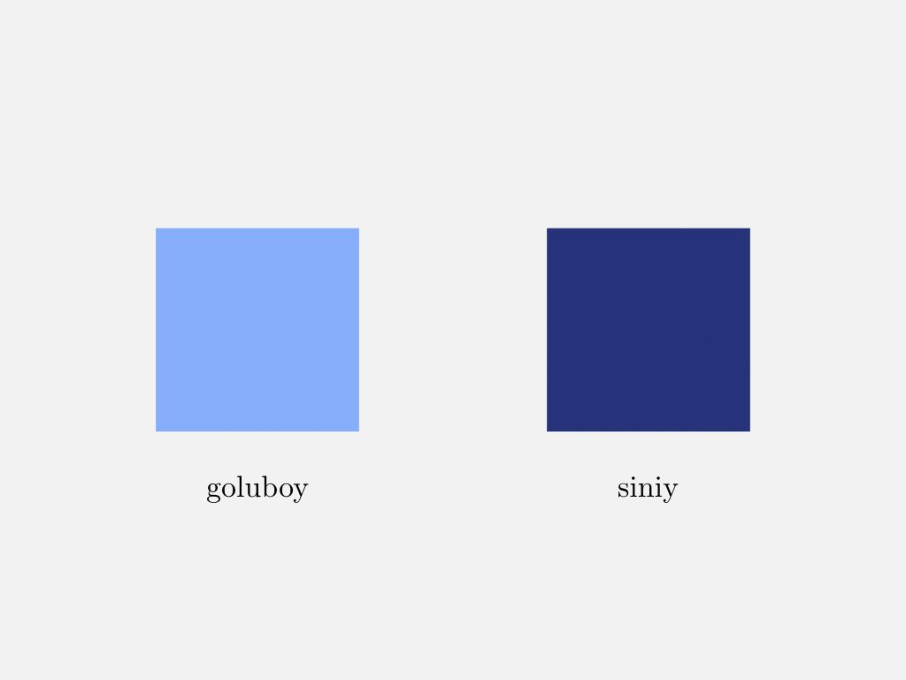
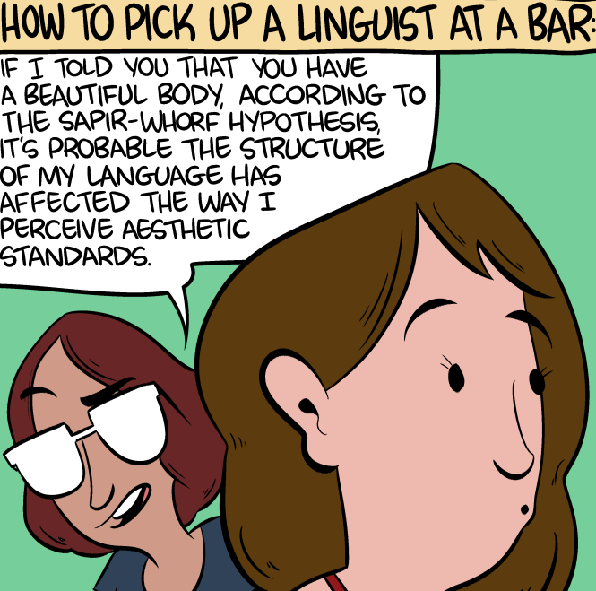

class: middle, center # Sapir-Whorf Hypothesis --- class: middle, center <iframe width="560" height="315" src="https://www.youtube.com/embed/fUJ3kV1jQkA" frameborder="0" allow="encrypted-media" allowfullscreen></iframe> --- class: middle, center # Weak vs. Strong --- class: middle, center ### Linguistic Relativity vs. Linguistic Determinism --- class: middle, center  --- class: middle, center ## Hopi's time controversy --- class: middle, center # **Views** --- class: middle, center ## Let's start by you --- class: middle, center ## Benjamin Lee Whorf --- class: middle, center ## Jerry Fodor's LOT (Mentalese) --- class: middle, center  --- class: middle, center  --- class: middle, center <iframe width="560" height="315" src="https://www.youtube.com/embed/nDM8G5tuHF8" frameborder="0" allow="encrypted-media" allowfullscreen></iframe> --- class: middle, center # **Arguments** --- class: middle, center ## Language X has n words for Y --- class: middle, center  --- class: middle, center ## Language X doesn't have a word for Y --- class: middle, center <div></div> --- class: middle, center  --- class: middle, center ## Color naming --- class: middle, center <div></div> --- class: middle, center <iframe width="560" height="315" src="https://www.youtube.com/embed/2TtnD4jmCDQ" frameborder="0" allow="encrypted-media" allowfullscreen></iframe> --- class: middle, center ## Time/Spatial --- class: middle, center ## Chinese, Australian languages... --- class: middle, center ## Gendered Pronouns and Articles --- class: middle, center ## **Sapir-Whorf hypothesis today** --- class: middle, center  --- class: middle, center ### Linguistic determinism is deemed false. --- class: middle, center ### Linguistic relativity is still plausible and under constant research. --- class: middle, center ## **Sapir-Whorf hypothesis in Literature** --- class: middle, center  --- class: middle, center  --- class: middle, center # **Thanks!** --- class: middle, center  --- class: middle, center <div></div>